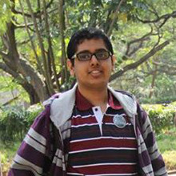

Sagnik Dasgupta
: sagnikd96@gmail.com
Phone
: +919632159766
Address
: 98, Mrigasira Block, Indian Institute of Science, Bangalore, Karnataka - 560012, India
Educational Qualifications
Bachelor of Science (Research) - Major in Material Science Aug 2014 — Apr 2018
Indian Institute of Science, BangaloreSenior Secondary Schooling Apr 2010 — Mar 2012
Chettinad Vidyashram, ChennaiScore: 93.4%Fields of Interests
- Carbon Based materials (Experience in graphene delamination and strain sensors)
- Crystallography
- Semiconductor Devices (Experience in multijunction thin film Si solar cells and Si heterojunction cells)
- Characterization
Research Projects
Bending Creep Test on AluminiumAug 2017 — Apr 2018
Dept. of materials Engineering, IISc Prof. Vikram Jayaram
This work involves the fabrication and creep testing of cantilever beams of commercially pure aluminium. Creep tests on cantilever beams involves bending creep. The main advantages of bending creep are that it is easier for small testing volumes and it reaches secondary creep faster. The aim of this work is to establish bending creep as a reliable alternative for uniaxial creep tests. Cantilever beams were machined out of commercially pure aluminium using Electrical discharge machining (EDM) and tested in a UTM at 250oC. Tests were performed at varying stresses to obtain a creep power law exponent of 3.6 with a 23% error. While the overall error is high, all data points except for a single outlier affirm an exponent of 4.5 as should be expected from the Weertman model.An experimental overview of PhotovoltaicsMay 2017 — July 2017
IEK-5 (Photovoltaics), Forschungzentrum Juelich, Germany Dr. Friedhelm Finger
This project involved exploration of various aspects of photovoltaics. Solar cell parameters for multi-junction thin film silicon solar cells were analysed over variation of angle of incident radiation and their efficiencies were compared. Further, the voltage generated by these cells were used on an electrolytic water splitting device to extract hydrogen gas. Using reference annual solar spectrum data, average photon energy was calculated and used to estimate the annual hydrogen production from these solar cells. On a second part of the project, the nature and quality of passivation of c-Si surfaces by a-Si:H was analysed for silicon heterojunction solar cells. This was done by calculation of the microstructural factor from the ratio of areas of the 2000 cm-1 and 2100 cm-1 peaks in the Raman Spectrum. Futher comparisons were made to the spectra in the same range under FTIR. This served as an exposure to different techniques in spectroscopy, and ways to optimise signal to noise ratio.Piezoresistive strain sensorsMay 2016 — July 2016
Indian Institute of Science, Bangalore, India Prof. Srinivasan Raghavan
This project involves the fabrication strain gauges using both metal thin films and using graphene. Gold thin films were sputtered on to triangular cantilevers made of PTFE and were loaded at the tip to impart strain. Change in resistance was measured as a function of strain. For graphene, the CVD grown graphene was transferred on to a similar triangular substrate with four golt contact pads sputtered on. Later wires were attached using silver epoxy and measurements were made on a Keithley 2450 SMU.Electochemical Delamination of CVD grown GrapheneMay 2015 — July 2015
Indian Institute of Science, Bangalore, India Prof. Srinivasan Raghavan
Graphene, CVD grown on copper, needs to be transferred onto other substrates. In this project, I have looked into various methods of carrying out such transfers, in particular, electrochemical methods. One such method involves electrolysis of water and the subsequent generation of hydrogen bubbles between the graphene/PMMA stack and the copper substrate resulting in the graphene being mechanically delaminated from the copper. A bubble free method was also briefly explored.Other Academic Activities
Term Papers
- Fractional Delay Filters in DSP Dec 2017
- Effect of Defects on Epitaxial Growth Dec 2017
- Polymer-Ceramic Composites for Sensors April 2017
- Analysis of Loads and Stresses on Bicycle Frames April 2016
Non Academic Initiatives
Coordinator for eSports tournament at Pravega 2016 February 2016
Lead a team to organise an eSports tournament at Pravega 2016. This involved interfacing with sponsors, managing computers and the network infrastructure, and hosting 100+ participants.Lead Website designer for Pravega 2015 February 2015
Trained and lead a team of three to design the website of Pravega 2015, IISc's Technology and Cultural Fest organised by the undergrads.Awards
JEE Advanced (formerly IITJEE) - 99.43rd percentile 2014
Joint Entrance Examination - Advanced Joint Entrance Examination – Advanced (JEE-Advanced) is an annual engineering college entrance examination in India. It is conducted by one of the seven zonal IITs. It has a very low admission rate (about 9,369 in 479,651 in 2012;which is around 1.95%)[2], and was thus recognised as one of the toughest examinations in the world. The current admission rate in 2017 is around 0.92% in IITs (about 11,000 out of 1,200,000 who applied for JEE Main) (Adapted from Wikipedia)WBJEE - 99.86th percentile 2014
West Bengal Joint Entrance Examination West Bengal Joint Entrance Examination or the WBJEE is a state-government controlled centralized test, conducted by the West Bengal Joint Entrance Examinations Board for admission to many private and governmental medical and engineering institutions in West Bengal. The test is taken after the 12th grade for admission to graduation (also known as Bachelors) courses. The exam can be taken by those who studied Pure Science stream in plus two level with the specific subjects tested in the examination, which are Physics, Chemistry, Mathematics and Biology. Every year approximately 3 lakh people take the examination. (Adapted from Wikipedia)KVPY Fellowship - 99.72th percentile 2013
Kishore Vaigyanik Protsahan Yojna The Kishore Vaigyanik Protsahan Yojana (KVPY) is an on-going National Program of Fellowship in Basic Sciences, initiated and funded by the Department of Science and Technology, Government of India, to attract exceptionally highly motivated students for pursuing basic science courses and research career in science. Selection of the students is made from those studying in XI standard to 1st year of any undergraduate Program in Basic Sciences in Mathematics, Physics, Chemistry and Biology having aptitude for scientific research. Special groups / Committees are set up at IISc to screen the applications and conduct an aptitude test at various centres in the country. Based on the performance in the aptitude test, short-listed students are called for an interview which is the final stage of the selection procedure. For receiving a fellowship, both aptitude test and interview marks are considered. (Adapted from website of the KVPY)NTSE Scholarship 2010
National Talent Search Examination The National Talent Search Examination (NTSE) is a National Level scholarship program in India to identify and nurture talented students. It honours and helps talented students by providing financial assistance in the form of a monthly scholarship for the entire Academic Career. Students studying in Class X (formerly Class VIII) are eligible to appear for the selection process. As it is organized by an official body (NCERT), it is widely regarded as the most prestigious examination at high school level in India. There is a two-stage selection process for award of scholarship. For Stage - I, selection will be done by States/UTs through the written examination. Each State/Union Territory has been allotted a quota to recommend a specific number of candidates for the Stage - II examination. Students who qualify Stage - I will be eligible to appear for Stage - II examination conducted by NCERT. (Adapted from fiitjee.com)Skills
Soft Skills
- Public Speaking
- Teaching
- Presenting
- Event Oragnisation
- Team Leading
Programming Languages
- C/C++
- Bash
- Matlab (Basics and Signal Processing)
- HTML+CSS+JS
Technical skills
- Microscopy
- Raman Spectrocopy
- Graphene Delamination
- Solar cell performance analysis
Hobbies
- Smartphone Photography
- Cycling
- Swimming
- Android Modding
- Web Development (HTML, CSS, JS)
Courses Taken
Semester 1 Aug 2014 — Dec 2014
- Introductory Physics I: Mechanics, Oscillations and Waves (2:1)
- Analysis and Linear Algebra I (3:0)
- Organismal Biology and the Molecular Basis of Life (2:1)
- Physical Principles of Chemistry (Quantum Chemistry) (2:1)
- Algorithms and Programming (2:1)
- Ways of Knowing: Cultural Analysis, Ethnographic Methods, Historical Analysis and Textual Analysis (3:0)
Semester 2 Jan 2015 — Apr 2015
- Introductory Physics II: Electricity, Magnetism and Optics (2:1)
- Analysis and Linear Algebra II (3:0)
- Microbiology, Molecular Biology and Genetics (2:1)
- Basic Inorganic Chemistry (2:1)
- Introduction to Electrical and Electroncs Engineering (2:1)
- Ways of Seeing: Literature, Visual Arts, Films (3:0)
Semester 3 Aug 2015 — Dec 2015
- Introductory Physics III: Thermal and Modern Physics (2:1)
- Introduction to Material Science (2:0)
- Probability and Statistics (3:0)
- Cell Biology, Immunology and Neurobiology (2:1)
- Basic Organic Chemistry (2:1)
- Introduction to Earth and its Environment (2:0)
- Ways of Doing: Mapping Science-Society Relationships (3:0)
Semester 4 Jan 2016 — Apr 2016
- Materials Thermodynamics (3:0)
- Structure of Materials (2:1)
- Mechanical Behaviour of Materials (3:0)
- Thermochemical and biological energy recovery from biomass (3:0)
- Fundamentals of Climate Science (2:1)
- Mapping India through the Folk Art (1:0)
Semester 5 Aug 2016 — Dec 2016
- Materials Kinetics (3:0)
- Mechanical Characterisation of Materials (1:1)
- Semiconductor Devices and Circuits (3:0)
- Corrosion (3:0)
- Material Synthesis (3:0)
- Polymer Science and Engineering (3:0)
- Journalism for Scientists (1:0)
Semester 6 Jan 2017 — Apr 2017
- Functional Properties of Materials (3:0)
- Introduction to Materials Processing (2:1)
- Introduction to Materials Manufacturing (2:1)
- Organic Electronics (3:0)
- Introduction to Biomaterials (3:0)
- Introduction to Electrochemical Engineering (3:0)
- Introduction to Governance (1:0)
Semester 7 Aug 2017 — Dec 2017
- Solar Energy: Advanced Materials and Devices (3:0)
- Digital Signal Processing (3:0)
- Defects in Materials (3:0)
- Functional Property Characterisation Laboratory (0:1)
- Entrepreneurship, Ethics and Societal Impact (1:0)
References
Dr. Friedhelm Finger
Head
Materials and Solar Cells
Institute of Energy and Climate Research - 5 (Photovoltaics)
Forschungszentrum Juelich
E-Mail: f.finger@fz-juelich.de
Website: http://www.fz-juelich.de/iek/iek-5/EN/Forschung/Abteilung%20MS/Ab_MS_node.htmlm
Prof. Uwe Rau
Director
Institute of Energy and Climate Research - 5 (Photovoltaics)
Forschungszentrum Juelich
E-Mail: u.rau@fz-juelich.de
Website: http://www.fz-juelich.de/iek/iek-5/EN/Home/home_node.html
Prof. Srinivasan Raghavan
Associate Professor
Centre for Nanoscience and Engineering
Indian Institute of Science
E-Mail: sraghavan@iisc.ac.in
Website: hhttp://www.cense.iisc.ac.in/srinivasan-raghavan
Prof. T.A. Abinandanan
Chairman
Materials Engineering
Indian Institute of Science
E-Mail: abinand@iisc.ac.in
Website: http://materials.iisc.ernet.in/~abinand/
Prof. Vikram Jayaram
Chair
Division of Mechanical Sciences
Dept. of Materials Engineering
Indian Institute of Science
E-Mail: qjayaram@iisc.ac.in
Website: http://materials.iisc.ernet.in/~qjayaram/
Head
Materials and Solar Cells
Institute of Energy and Climate Research - 5 (Photovoltaics)
Forschungszentrum Juelich
E-Mail: f.finger@fz-juelich.de
Website: http://www.fz-juelich.de/iek/iek-5/EN/Forschung/Abteilung%20MS/Ab_MS_node.htmlm
Prof. Uwe Rau
Director
Institute of Energy and Climate Research - 5 (Photovoltaics)
Forschungszentrum Juelich
E-Mail: u.rau@fz-juelich.de
Website: http://www.fz-juelich.de/iek/iek-5/EN/Home/home_node.html
Prof. Srinivasan Raghavan
Associate Professor
Centre for Nanoscience and Engineering
Indian Institute of Science
E-Mail: sraghavan@iisc.ac.in
Website: hhttp://www.cense.iisc.ac.in/srinivasan-raghavan
Prof. T.A. Abinandanan
Chairman
Materials Engineering
Indian Institute of Science
E-Mail: abinand@iisc.ac.in
Website: http://materials.iisc.ernet.in/~abinand/
Prof. Vikram Jayaram
Chair
Division of Mechanical Sciences
Dept. of Materials Engineering
Indian Institute of Science
E-Mail: qjayaram@iisc.ac.in
Website: http://materials.iisc.ernet.in/~qjayaram/